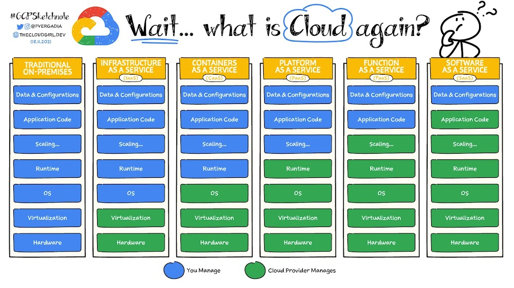

Linux Containerization Technology
Jeffrey Fonseca
What are containers?
- The operating system is made up of many building blocks, almost always placed unevenly
- Container runtimes are a commmon platform that can be built off of

History
- OpenVZ: Built custom kernel to make containers
- Did not update this custom kernel (2.6 is their stable, 3.10 is dev).
- Current Kernel is 6.5+
Benefits and Downsides
- Containers use less memory, because
- share the host kernel
- only contain what is necessary to use an application
- Identical parts of containers (layers) are shared in memory, saving more memory
- Not as secure as virtual machines
- Container escape CVE’s are rare but fatal
- Very easy to configure, but misconfigurations can be fatal
- CTF will be a container escape one (with no CVEs)
LXC and modern containers
- Many groups needed containers in mainline, so they contributed
- namespaces, cgroups (Google), seccomp, virtual filesystems, etc
- Eventually, LXC was the first iteration of modern container software (IBM)
- Docker was based of off lxc, but eventually switched to their own runtime
OS vs Application Type
- OS
- Designed to simulate a linux system
- Often used for virtual private servers
- E.G: LXC, Openvz
- Application
- Designed for ease of development and distribution of apps/services
- OCI based runners, like docker, podman, kubernetes, nomad
OCI Standard
- Not to be confused with Oracle Cloud
- Open Container Initiative
- Linux Foundation Project, by Docker, CoreOS, and others
- Standardized Format for application container images
- Make distributing services very, very easy
Most Popular: Docker and Kubernetes
- Docker runs OCI images
- Docker Hub: Massive repository of images for every type of application
- Kubernetes: Clustering software
- Can run OCI images across multiple machines at once
Docker
- Simple
- One daemon that runs as root, that autostarts, and handles containers as services
- Docker socket (/var/run/docker.sock), which can be served over the network, or mounted inside a container or vm (it’s also a file)
Docker (cont.)
- Downside: Runs as root:
- Having access to the docker socket means you are effectively root
- Escaping a container as root means you are root on the host
- “One process, one container”
Kubernetes
- A.K.A “k8s”
- Extremely powerful
- Massively complex, many moving parts
Kubernetes (cont.)
- Different Distributions of Kubernetes

Others Container Orchetstrators
- Docker Swarm Mode
- Literally docker, but across multiple machines
- Hashicorp Nomad
- Integrates with many other Hashi products
- supports other, unorthox runtimes (e.g: qemu)
Runtimes
High level:
- Docker Engine (deprecated, docker now uses containerd + runc)
- Containerd
- Cri-o
Low Level
- runc
- crun (default of podman)
- Kata (virtual machine)
- NVIDIA
High Performance Computing (HPC)
- Science needs reproducibility
- Simulations ran using programs need to be ran using the same code
- Slurm, runs any jobs across a cluster, but is not reproducible
- By using slurm to run singularity/apptainer (OCI runtimes), you get more reproducibility in science
- Kubernetes is used for machine learning
- NVIDIA provides OCI images with drivers for GPU’s baked in
Cloud
- AWS, GCP, Oracle, etc offer containers as a service
- Also offer managed kubernetes

When NOT to use containers
- Multi-langauge projects, e.g: replit
- Unprivileged environments (no unshare?)
- Multi-OS support (OCI runners use a virtual machine on non-linux)
- Security: Do not mistake containers with security
CTF
- I will pass out virtual machines
- CTF IP: http://172.16.24.27
- On the virtual machine: http://vm-ip:3000
- Flags are in roots home directory
- Double container escape